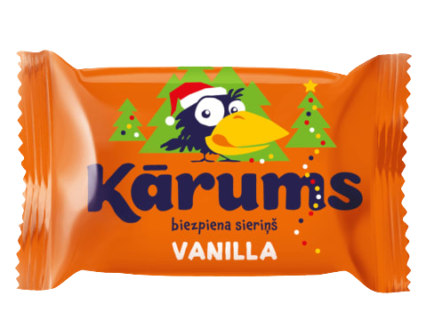
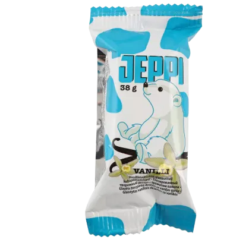

Tere kohukesed
Kuigi tegu on tõenäoliselt Eesti kõige populaarsema kohukesebrändiga, jääb nende kohukestelt siiski palju tahta. Tere kohukeste glasuur on tavaliselt tükkideks juba enne pakendist välja võtmist, lisaks sellele on kohupiim hästi kuiv ja ei sula suus. Kuigi erinevaid täidiseid on palju, ei aita ükski neist siiski suudkuivendava kohupiima vastu.
Karumsi kohukesed
Jällegi tegu ühe kohukeste suurnimega, seekord siis pärit Lätist. Karumsi kohukeste glasuur on hästi õhuke ja pehme, mida võib pidada nii plussiks kui ka miinuseks. Karumsi kohupiim on suussulav ja kreemjas. Erinevaid sorte on rohkelt ja need on kõik väga maitsvad.
Rimi kohukesed
Rimi kohukesed võivad oma magusate hindadega lihtsasti silma jääda, kuid see pole ainus asi mis nende juures magus on. Rimi kohukeste kohupiim on märkimisväärselt magusam kui enamustel konkurentidel, kuid selle toob tasakaalu tumedam šokolaadiglasuur. Vanillist erinevad sordid on kohati aga liiga magusad enamustele. Kokku tuleb väga hea pakkumine õige hinna eest, kui magusus ei häiri.
Hüva kohukesed

Hüva on üks odavamaid turul aga mitte halvem kui teised. Šokolaadiglasuur on väga meeldiv ja püsib hästi ümber kohupiima. Täidis on samuti ühtlane ja väga maitsev. Odavama hinna saavutavad nad kaalu tõttu, kuna nad ka kaaluvad 38g, mis on teistega võrreldes paar kuni viis grammi vähem. Maitseelamus on siiski väga hea. Sortide valik on lihtne, pakutakse vanilli-, šokolaadi- ja vaarikakohukesi
Aasa kohukesed
Aasa on kohukeste turul veidi uuem tegija, kuid ei tasu tundmatu nime tõttu neid vältida. Kuigi Aasa vanillikohukesed pole midagi erakordset, siis on nad pannud šokolaadikohukeste retseptiga täppi, mis on suussulavad oma väikeste šokolaaditükkidega. Glasuur on krõbe, mis eristab neid paljudest teistest.
Jeppi kohukesed
Farmi on tõesti hästi hakkama saanud oma kohukestega. Glasuur kohukese ümber on lausa suussulav ja püsib hästi koos. Samuti on ka kohupiim pehme ja ühtlase konsistentsiga. Suuruselt on need küll samuti ühed väiksemad, aga maitse ja hinna suhte poolest siiski silmapaistvad.
Saaremaa kohukesed
Saaremaa kohukesi eristab lai sordivalik. Tavalise vanilli kõrval on veel suurepärane toffee sort, jõhvika sort ja veel mitmeid. Saarefood on üks ainukesi tootjaid, kes pakuvad ka laktoosivabasid kohukesi. Neid on tavalise vanilli ja ka jõhvikatäidisega. Šokolaadikiht kohupiima ümber on üpris kergesti pragunev ja habras võrreldes mõne teise tootjaga, ehk šokolaad on tihti enne avamist juba murenenud. Kohupiim on pigem kuivapoolne ja tükiline aga koos eri täidiste ja glasuuridega maitsev.